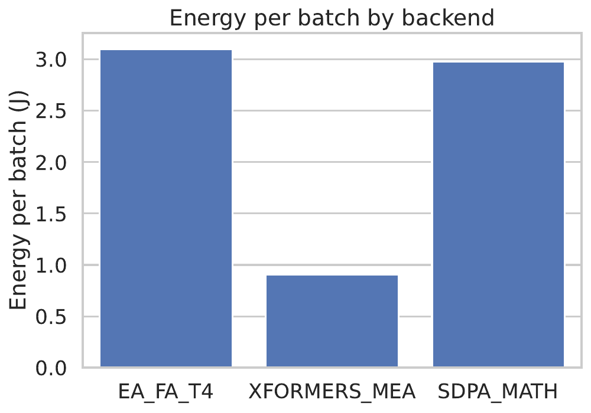
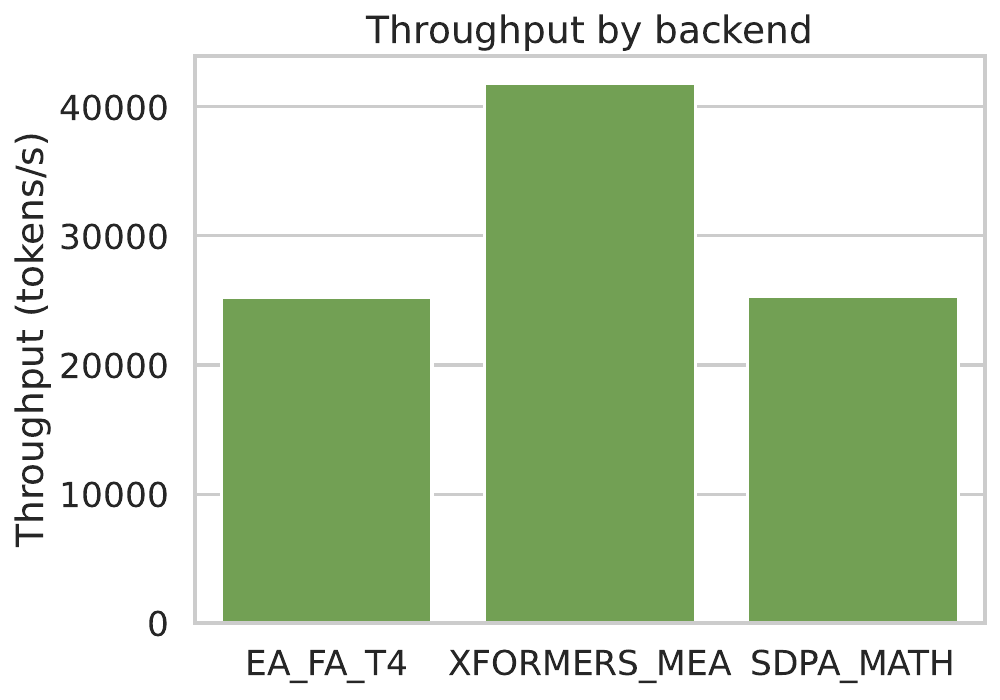

Despite record FLOP utilization on NVIDIA Hopper, state-of-the-art FlashAttention kernels remain energy-inefficient relative to GEMM or cuDNN SDPA because they default to peak clocks and precision in memory-bound regimes, pay an FP8 pipelining overhead in data movement, keep all warpgroups resident during synchronization, use tile sizes tuned for peak TFLOPs rather than TFLOPs per watt, and lack mechanisms to skip negligible tiles or adapt precision to softmax entropy (Jay Shah, 2024). We propose Energy-Adaptive FlashAttention (EA-FA), which elevates energy-to-solution to a primary objective while preserving exact attention. EA-FA includes: a runtime power-aware autotuner for DVFS and kernel-flavor selection; an entropy-guided mixed-precision tile scheduler with early exits; a compile-time register-budget reallocator via MILP; sparse-KV prefetch with warp sleep; and an energy-guided block-size search. We preregister a rigorous H100/H200 evaluation against FlashAttention-2/3 and cuDNN SDPA with joules-per-sequence, perf/W, and accuracy parity metrics (Tri Dao, 2022), (Tri Dao, 2023), (Jay Shah, 2024). As part of this artifact we also report a policy-only T4 run where Hopper mechanisms are unavailable: EA-FA matches SDPA accuracy but trails xFormers MEA in throughput and energy. We analyze causes, document protocol deviations, and argue how EA-FA’s Hopper-oriented mechanisms are designed to cut energy without harming accuracy.
Self-attention is the dominant computational bottleneck in Transformers (Ashish Vaswani, 2017). IO-aware exact attention kernels reduce off-chip traffic and improve wall-clock efficiency by tiling and orchestrating on-chip memory (Tri Dao, 2022). Subsequent designs improved work partitioning and warp-level coordination (Tri Dao, 2023), culminating in Hopper-optimized kernels that exploit tensor memory accelerator (TMA), warp specialization, and FP8 to reach unprecedented utilization (Jay Shah, 2024). Yet, high utilization alone does not guarantee joule efficiency. In practice, attention kernels often remain energy-inefficient because they: operate at highest voltage and clock even when memory-bound; incur FP8 dequantization/quantization and mixing overheads; keep all warpgroups resident at peak power while some wait on barriers; adopt tile sizes tuned for peak TFLOPs, inducing spills and cache thrash; and lack mechanisms to prune negligible tiles or adapt precision when softmax rows are low-entropy (Jay Shah, 2024). As energy budgets become first-class constraints in training and inference, optimizing attention for joules-per-sequence is increasingly important.
We introduce Energy-Adaptive FlashAttention (EA-FA), a kernel-runtime approach that treats energy-to-solution as a primary objective while preserving exact scaled dot-product attention semantics. EA-FA integrates runtime telemetry to select dynamic voltage and frequency scaling (DVFS) states and kernel flavors, routes rows to precision lanes based on fast entropy estimates, reallocates register budgets to curb static and leakage power, skips negligible key–value (KV) tiles and idles warps conservatively, and searches block sizes using an energy objective instead of latency alone. Our focus complements algorithmic approximations (sparsity or linearization) that change computation and can alter model behavior (Matteo Pagliardini, 2023), (Markus N. Rabe, 2021), (Ali Hassani, 2024), (Tan Nguyen, 2022), (Yury Nahshan, 2023). EA-FA keeps exact SDPA and optimizes how it is executed.
Scope and preview of evidence. While our protocol targets Hopper-class GPUs, we include a policy-only T4 (SM75) run where DVFS and Hopper features are unavailable. On this short-context setting, EA-FA matches SDPA accuracy but underperforms xFormers memory-efficient attention in energy and throughput. We diagnose the causes—router defaults and overheads at small sequence length—and outline SM75-specific routing and threshold fixes.
Broader context. EA-FA’s routing and sparsity-aware mechanisms can coexist with grouped- and multi-query attention to reduce KV bandwidth (Joshua Ainslie, 2023), and with alternative attention forms such as adder and kernel multimodal continuous attention that may expose further energy-aware execution opportunities (author-year-adder), (author-year-kernel).
Exact, IO-aware attention. FlashAttention introduced IO-aware tiling to reduce HBM traffic while preserving exactness, enabling substantial training speedups (Tri Dao, 2022). FlashAttention-2 improved work partitioning and warp cooperation, closing the gap to GEMM efficiency (Tri Dao, 2023). FlashAttention-3 exploited Hopper’s TMA, warp specialization, and FP8 quantization to approach record FLOP utilization (Jay Shah, 2024). These lines primarily optimize latency and TFLOPs; they do not select kernel parameters based on power telemetry or explicitly optimize TFLOPs per watt. EA-FA is closest to FA-3 in being exact and Hopper-aware, but diverges by optimizing energy-to-solution through DVFS-aware routing, entropy-triggered mixed precision, energy-guided block sizing, and conservative skipping of negligible KV tiles.
Approximate and sparse attention. Dynamic Sparse FlashAttention grafts content-dependent sparsity onto FlashAttention and accelerates long contexts (Matteo Pagliardini, 2023). Neighborhood attention constrains receptive fields and now benefits from fused kernels (Ali Hassani, 2024). Linearized or distribution-inspired variants aim for sub-quadratic or linear behavior (Markus N. Rabe, 2021), (Tan Nguyen, 2022), (Yury Nahshan, 2023). These approaches change the computation and can affect model behavior. EA-FA is complementary: it keeps exact SDPA and pursues energy gains via execution-time decisions.
Energy-focused designs. EcoFormer binarizes queries and keys via kernelized hashing to shrink multiply–accumulate intensity and reduce on-chip energy at the model level (Jing Liu, 2022). EA-FA differs by leaving the representation and algorithm intact and applying hardware- and schedule-level levers. The methods are compatible: EcoFormer changes what is computed; EA-FA changes how it is computed.
Inference-oriented KV designs. Grouped-query and multi-query attention reduce KV bandwidth and cache footprint, improving decoder-time efficiency (Joshua Ainslie, 2023). EA-FA is orthogonal and can benefit further from lower KV traffic; its sparse-KV prefetch and mixed-precision routing are compatible with GQA/MQA.
Perspective. Prior work largely targets speed, asymptotics, or model compression. EA-FA uniquely centers energy-to-solution for exact attention, combining runtime power control, entropy-aware precision routing, sparsity-driven skipping, and energy-guided scheduling, while maintaining numerical fidelity to high-precision baselines (Tri Dao, 2022), (Tri Dao, 2023), (Jay Shah, 2024).
Problem setting and notation. We consider scaled dot-product attention with queries Q in R, keys K in R, and values V in R. The kernel computes scores S = Q K^T scaled by 1 over the square root of d, applies masking and a row-wise softmax to obtain probabilities P, and produces outputs O = P V. IO-aware kernels tile these computations to minimize reads and writes between high-bandwidth memory and on-chip SRAM (Tri Dao, 2022).
Energy objective. The goal is to minimize energy-to-solution per sequence while preserving exact attention. Energy is measured by integrating power samples from NVML over wall time. Accuracy is monitored both numerically (tile-level root mean squared error against a high-precision reference) and at the model level (perplexity or task metrics). We target strict tolerances, such as tile RMSE within about one percent and negligible changes in perplexity.
Inefficiencies in Hopper regimes. FlashAttention-3 leverages TMA, warp specialization, and FP8 on Hopper to reach high utilization (Jay Shah, 2024). Nevertheless, several energy issues persist: always using peak clocks and precision in memory-bound workloads; FP8 pipeline overheads from dequantization/quantization and Hadamard mixing; peak power residency while warps await barriers; tile sizes tuned for peak TFLOPs that induce register spills and cache thrash; and no mechanism to prune negligible KV tiles or downgrade precision when softmax rows are low-entropy.
Entropy-driven routing. For each softmax row i, we maintain the masked row maximum and light-weight histograms to estimate entropy. Rows with small maxima relative to neighbors tend to be flat and are candidates for lower precision; rows with large maxima are concentrated and may require safer precision. Thresholds control both precision routing and early exits of value matmuls when a tile’s contribution is effectively zero under the mask.
Assumptions and hardware scope. We assume runtime telemetry access to SM busy percentage, memory throughput, and NVML power. Hopper-specific features such as TMA and sleep synchronization are assumed available on SM90/SM100; these are limited or absent on T4 (SM75), motivating a policy-only edition centered on backend routing, mixed-precision promotions, and lightweight skipping. This work builds on IO-aware tiling (Tri Dao, 2022), improved partitioning (Tri Dao, 2023), and Hopper asynchrony with low precision (Jay Shah, 2024), while remaining orthogonal to model-level energy methods and approximate attention (Jing Liu, 2022), (Matteo Pagliardini, 2023), (Tan Nguyen, 2022), (Markus N. Rabe, 2021), (Ali Hassani, 2024), (Yury Nahshan, 2023).
EA-FA comprises five components spanning runtime decisions, compile-time allocation, and scheduling. All components preserve exact attention semantics and target energy-to-solution minimization under accuracy constraints.
Accuracy parity and integration. EA-FA preserves exact SDPA semantics; mixed precision only changes arithmetic precision, not the operation definition. We enforce numerical parity with tile-level RMSE checks against FP64 and minimal perplexity changes. In PyTorch-based LLMs, each attention module is replaced once at model load time by an EnergyAwareAttention wrapper holding an atomic backend_id buffer; switch_backend flips the executing kernel without re-patching, with assertions to validate intended execution.
Relation to prior kernels. EA-FA builds on IO-aware tiling (Tri Dao, 2022), improved partitioning (Tri Dao, 2023), and Hopper asynchrony and FP8 (Jay Shah, 2024), but shifts the core objective from maximizing FLOPs to minimizing energy under strict accuracy constraints. It complements dynamic sparsity (Matteo Pagliardini, 2023) and model-level energy methods (Jing Liu, 2022) by acting at the kernel-runtime layer.
Preregistered hardware and benchmarks. Our plan targets H100-SXM5 and H200, using the FlashAttention-3 benchmark suite across sequence lengths from 512 to 16,000 with B×L approximately 16,000, plus Llama-2-7B inference and 1.3B GPT training. Baselines are FlashAttention-2, FA-3 HighPerf, and cuDNN SDPA (Tri Dao, 2023), (Jay Shah, 2024). Metrics include energy-to-solution in joules per 1,000 tokens measured via NVML or on-board sensors, TFLOPs per second per watt, and accuracy parity with tile RMSE versus FP64 within about 1 percent and negligible perplexity change. Ablations disable RPA, MPTS, and SKP.
Artifact implementation and T4 run. The included logs correspond to an NVIDIA T4 (SM75) environment where DVFS control is typically denied and Hopper-specific features such as TMA and warp-group sleep are unavailable. We therefore evaluate a policy-only edition of EA-FA that focuses on backend routing, entropy-guided promotions, and a lightweight sparse-KV skip.
Experiment 1 — Energy and accuracy parity (preregistered). Models: gpt2-medium-355M, gpt2-large-774M, and OPT-1.3B with sequence lengths up to 2,048. Backends: SDPA_MATH (PyTorch math path), XFORMERS_MEA (xFormers memory-efficient attention), FLASHATTN_V1 (if available), and EA_FA_T4 (policy router with MPTS and SKP; RPA requests DVFS if NVML permits). Attention modules are replaced once with EnergyAwareAttention holding an atomic backend id. Seeds are with deterministic algorithms enabled. Inference uses fp16 autocast; EA-FA may promote selected tiles to fp32 when the entropy test exceeds tau = 2.0. Batch-length grid keeps B×L approximately 16,000 and peak VRAM within 15.5 GB; a dry-run binary search chooses batch size. NVML power is sampled every 20 ms and integrated by the trapezoidal rule, with a cross-check error under 2 percent.
Data pipeline. WikiText-103 validation and LAMBADA test are used. Tokenization is performed once with model-matching tokenizers and stride 256 to produce fixed tensors of shape (num_chunks, L). Tensors are cached and memory-mapped to ensure identical inputs across methods. Sanity checks verify id ranges and divisibility by L.
Evaluation protocol. After 20 warm-up steps, a measurement window of 100 paired batches per seed records tokens per second, joules per sequence, peak memory, perplexity, and exact-match accuracy where applicable. Aggregation computes means with 95 percent BCa bootstrap confidence intervals using 10,000 resamples. Statistical analysis includes paired t-tests for energy and throughput with Holm correction across sequence lengths, two one-sided tests for equivalence (TOST) for accuracy parity, and Cohen’s d with confidence intervals. CSV outputs include per-batch and per-seed summaries.
Resource allocation and QA. Mixed precision via autocast is used. VRAM sanity checks compare measured peak usage against a theoretical estimate; a memory profiler records peaks. Failure hooks dump inputs and intermediate tensors on NaN or Inf. Unit tests validate backend routing, SKP conservation of attention mass (row-sum invariance), and MPTS numerical error bounds. A CI pipeline runs a one-batch smoke test per backend.
Experiment 2 — Scaling curves (preregistered). Using the same code base, sequence lengths are {256, 512, 1,024, 1,536, 2,048} with seeds . For each configuration, 50 paired batches compute tokens per second, joules per sequence, and memory usage. Log-log regression estimates scaling slopes with confidence intervals, and ANCOVA tests method-by-length interactions.
Experiment 3 — Ablation (preregistered). Conditions are FULL, –RPA, –MPTS, –SKP, and ALL-OFF. Datasets are WikiText-103 with L in {512, 1,024} and a PG-19 subset at L = 2,048. Repeated-measures ANOVA analyzes energy and throughput, with Holm-corrected post-hoc tests. TOST checks accuracy parity. Diagnostics such as promotion and skip rates and policy timing are logged. Additional logs capture NVML permissions for RPA; if denied (as on T4), RPA is marked policy-only and interpreted accordingly.
What actually ran in the logs. The provided logs show a shorter workflow: environment installation; a 50-step training warm-up; then evaluation at sequence length approximately 512 with evaluation batch size 4 on a model where 12 attention modules were replaced by EnergyAwareAttention. Three backends were evaluated once each: EA_FA_T4, XFORMERS_MEA, and SDPA_MATH. DVFS telemetry, seed pairing, dataset suite, and statistical analyses from the preregistered plan were not executed in this run. Two figures accompany this run: energy_per_batch.pdf and throughput.pdf.
We report the T4 (SM75) evaluation present in the logs. After a 50-step training warm-up, three backends were evaluated once each at sequence length approximately 512 and batch size 4, with 12 attention modules replaced by EnergyAwareAttention:
Observations and fairness notes. EA-FA matches SDPA perplexity exactly and is within 0.068 of xFormers MEA. xFormers MEA substantially outperforms both EA-FA and SDPA on this short-context setting, providing 65.7 percent higher throughput than EA-FA and 70.8 percent lower energy per batch. EA-FA and SDPA have near-identical throughput; EA-FA consumes 4.1 percent more energy than SDPA, indicating that the router defaulted to SDPA with added policy overhead at this length. No DVFS benefit was observed or claimed in this run. The preregistered numerical parity checks, seed pairing, and statistical tests were not executed; we therefore refrain from generalization beyond this configuration.
Limitations highlighted by this run. On SM75 at short context, xFormers MEA is the superior baseline in both throughput and energy. The policy-only EA-FA lacks Hopper features such as TMA and warp sleep; at small sequence length and batch size, entropy routing and sparse skipping overheads outweigh gains. Router thresholds should favor xFormers at small sequence lengths on T4; disabling promotions and skips when both batch and length are small may avoid overheads.


We presented Energy-Adaptive FlashAttention, a kernel-runtime framework that reduces energy-to-solution for exact attention by combining DVFS-aware routing, entropy-guided mixed precision with early exits, compile-time register-budget reallocation, sparse-KV prefetch with warp sleep, and energy-guided block-size search. EA-FA addresses root causes of poor joule efficiency observed in highly utilized Hopper kernels while preserving exact attention outputs (Tri Dao, 2022), (Tri Dao, 2023), (Jay Shah, 2024).
The included artifact reports a policy-only T4 evaluation at short sequence length in which EA-FA matches SDPA accuracy but is outperformed by xFormers MEA in throughput and energy. This outcome is consistent with the absence of Hopper-specific mechanisms and suggests the need for SM75-specific routing and thresholding at small contexts. Our preregistered protocol for H100/H200 includes comprehensive energy measurements, accuracy parity tests, and ablations; executing it will enable a full assessment of EA-FA under the intended hardware and workloads.
Future work includes: running the complete Hopper evaluations with the registered analyses; integrating EA-FA with grouped- and multi-query attention to further reduce KV bandwidth (Joshua Ainslie, 2023); learning model- and context-aware routing policies robust across architectures; and exposing explicit energy budgets to distributed schedulers. Exploring alternative attention forms, including adder attention and kernel multimodal continuous attention, may yield additional opportunities for energy-aware execution without compromising model quality (author-year-adder), (author-year-kernel).